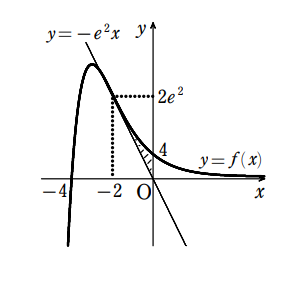

解答解説[6](3)
\((1)の方程式①t^2-at-a=0 に a=-4 を代入して解く\)
\begin{eqnarray*}
t^2-at-a&=&0 \\
t^2+4t+4&=&0 \\
(t+2)^2&=&0 \\
t&=&-2
\end{eqnarray*}
\(接線の方程式\)
\begin{eqnarray*}
y &=& \frac{1-(t+4)}{e^t}(x-t)+ \frac{t+4}{e^t} に t=-2 を代入\\
&=& \frac{1-(-2+4)}{e^{-2}} \lbrace x-(-2)\rbrace+ \frac{-2+4}{e^{-2}}\\
&=& -e^2(x+2)+2e^2\\
&=& -e^2x-2e^2+2e^2\\
y &=& -e^2x\\
\end{eqnarray*}
\(よって接点の座標は、(-2, 2e^2)\)
\(したがって求める面積Sは\)

\begin{eqnarray*}
S &=&\int_{-2}^0 \lbrace (x+4)e^{-x}-(-e^2x) \rbrace dx \\
&=& \left[ \frac{x^2}{2} \right]_0^1 \\
&=& \frac{1}{2}
\end{eqnarray*}
戻る